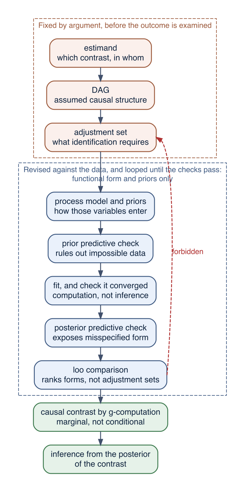
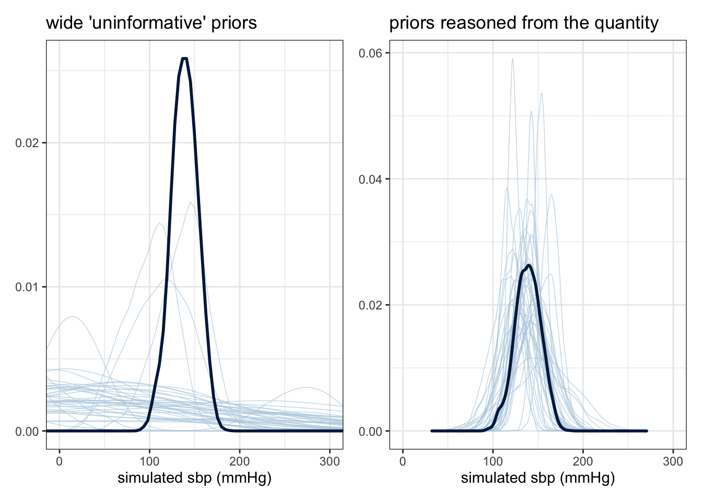
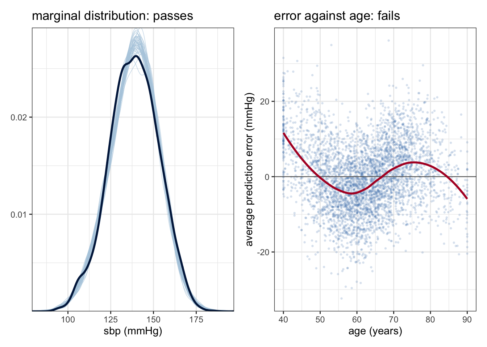

Chapter 21 settled which variables a model must contain. This chapter is about everything that follows from that decision: how those variables should enter the model, what the priors on them imply about the data, whether the fit can be trusted, how candidate functional forms should be compared, and how a fitted model is finally turned into the causal contrast the question asked for.
Nothing in the workflow is specific to the example it is taught on. Figure 23.2 is the template the rest of the book follows, and the warning attached to its model-comparison step is the reason the chapter exists as a separate one: a fit statistic can rank functional forms, and it cannot audit a causal graph.
23.1 A second study
The master cohort was built so that its blood-pressure equation is linear and additive: the drug lowers pressure by 12 mmHg in everyone, and age contributes a constant 1.5 mmHg per decade. That makes it a clean target for adjustment and a poor one for the rest of this chapter, because the additive straight-line model is correct there and nothing is learned by improving it.
So the remainder works with a second simulated study in the same clinical setting – a different blood-pressure drug, in a cohort of 4 000 patients – built with three features the master cohort does not have.
The untreated blood-pressure-versus-age relation is not a straight line: pressure climbs steeply through the sixties and then flattens.
The drug’s effect varies with age: about 20 mmHg in a 45-year-old, 14 mmHg at 62, under 8 mmHg at 80.
Prescribing follows a guideline keyed to age, so treatment is confounded by age, and confounded non-linearly: the treated proportion rises from about 18% below 70 to about 80% above 74.
The data generating process lives in R/simulate_study2.R, which this chapter and Chapter 23 both source, so that the two work from one definition of the truth:
Show code
# The "second study": a non-linear age curve, an age-varying drug effect, and# prescribing keyed to age. Sourced by Chapters 22 and 23 so that both work from# one definition of the data generating process. Fits are cached under models/.set.seed(4021)n2 <-4000age <-pmin(pmax(rnorm(n2, 62, 11), 40), 90)# TRUTH 1: untreated mean pressure as a function of age (a curve, not a line)f_age <-function(a) 130+32*plogis((a -66) /4)# TRUTH 2: the drug's effect, which wanes with agetau <-function(a) -14+0.35* (a -62)# TRUTH 3: prescribing rises steeply around age 72drug <-rbinom(n2, 1, plogis(-1.5+3.0*plogis((age -72) /2)))sbp <-f_age(age) +tau(age) * drug +rnorm(n2, 0, 8)# a variable measured AFTER treatment: monitoring intensity depends both on# being treated and on how high the patient's pressure turned out to bemonitoring <-4+2* drug +0.10* (sbp -140) +rnorm(n2, 0, 1)# drug enters the data frame as a FACTOR, not as a 0/1 numeric. The two are# interchangeable in every additive model, but not in the `s(age, by = drug)`# term: with a factor that term fits one age curve per arm, with a numeric it# fits a single curve multiplied by drug. The callout at the end of the# interaction section of Chapter 23 sets out the difference.study2 <-tibble(age, age_c = (age -62) /10, drug =factor(drug), sbp, monitoring)## ---- the answer key -------------------------------------------------------## Known only because the data are simulated; used to score the fits.ate2 <-mean(tau(study2$age))att2 <-mean(tau(study2$age[study2$drug =="1"]))tau_ages <-tau(c(45, 62, 80))vw2 <-with(study2, { p <-plogis(-1.5+3.0*plogis((age -72) /2)); w <- p * (1- p)sum(w *tau(age)) /sum(w)})
The answer key: the average causal effect in this population is -13.89 mmHg, the effect among the treated is -11.96 mmHg – they differ because the treated are older and the drug does less in the old – and the effect at ages 45, 62 and 80 is -20, -14 and -7.7 mmHg.
Figure 23.1: The second study as observed. Left: systolic pressure against age, by treatment; the untreated curve is clearly not a straight line, and the treated points are concentrated in the older half of the range. Right: the treated proportion by age, which is what the prescribing guideline produces. Almost nobody young is treated and almost everybody old is, which is why the model’s assumptions about the shape of the age curve matter so much.
23.2 The workflow
The workflow below is the one the rest of the book uses. Figure 23.2 sets it out, labelling each stage by the job it does for the causal claim rather than by what it computes.

Figure 23.2: The Bayesian workflow used in this book, with each stage labelled by its contribution to the causal claim. The upper block is settled by argument before the outcome is examined, and the data cannot revise it. The middle block is a loop over functional form and priors. The lower block is where the causal answer is produced. The red arrow is the move the workflow forbids: no fit statistic can revise the adjustment set.
Three features of that diagram matter more than the individual stages.
The upper block is settled before the outcome is examined. The estimand states which contrast is wanted and in whom, the DAG states what is assumed about the causes, and the adjustment set follows from the two. Everything that makes the effect identifiable is decided here, by argument, and the data have no vote.
The middle block is a loop, and it concerns form: given the variables that identification requires, how should they enter the model and what should their priors be. Its checks can send the analyst back to widen a prior or to replace a line with a curve. What they cannot do is send the analyst back into the upper block, which is why the arrow from loo to the adjustment set is drawn as forbidden. A model can pass every check in the loop and still answer the wrong question; the section on what loo cannot do gives a worked case.
The lower block is where the causal answer is produced, and it is not the coefficient table. The contrast is computed from the fitted model by g-computation, averaged over the covariate distribution, and what inference is drawn from is the posterior of that contrast.
23.2.1 Before the data: the prior predictive check
A prior on a coefficient is hard to judge directly. What can be judged is the data the prior implies. Draw parameters from the prior, simulate an outcome for every patient, and look at what comes out. In brms this is sample_prior = "only", which runs the sampler with the likelihood switched off, after which pp_check() draws the simulated datasets.
We compare two prior sets. The first is the kind often described as uninformative: wide normals on everything. The second is the one used above, reasoned from what blood pressure is.
Show code
pri2 <-c(prior(normal(140, 15), class ="Intercept"),prior(normal(0, 10), class ="b"),prior(normal(12, 6), class ="sigma"))pri2_wide <-c(prior(normal(0, 100), class ="Intercept"),prior(normal(0, 100), class ="b"),prior(student_t(3, 0, 100), class ="sigma"))m2_prior_wide <-brm(sbp ~ drug + age_c, data = study2, family =gaussian(),prior = pri2_wide, sample_prior ="only",file ="models/m2_prior_wide", file_refit ="on_change")m2_prior <-brm(sbp ~ drug + age_c, data = study2, family =gaussian(),prior = pri2, sample_prior ="only",file ="models/m2_prior", file_refit ="on_change")

Figure 23.3: Prior predictive checks, both panels drawn over the same physiologically possible range of systolic pressure. Each thin line is one dataset simulated from the prior; the thick line is the observed distribution. Left: wide normal priors on everything. The simulated pressures are spread over hundreds of mmHg in both directions, so inside the displayed range the densities are low and nearly flat, and almost half of the simulated values are negative. Right: the priors used in this chapter, which place the simulated data in the right region while remaining far too wide to determine the answer.
Under the wide priors, 51% of the simulated blood pressures are negative, and the central 95% of them runs from -455 to 458 mmHg. Under the reasoned priors 0% are negative and the central 95% runs from 94 to 187 mmHg. Neither prior will change the answer much at n = 4 000 – the likelihood dominates both – and that is the usual situation. The check still matters for two reasons. The first is that it catches priors that are accidentally informative about something absurd, which happens whenever a wide prior is placed on a coefficient whose predictor takes numerically large values. The second is that in the models later in this chapter, where an interaction or a smooth term is estimated from a thin slice of the data, the prior does move the answer, and by then it is too late to find out that it implies impossibilities.
The first reason is worth spelling out, because “large scale” is a property of the units and not of the variable. What enters the linear predictor is not \(\beta\) but the product \(\beta x\), so a prior is never wide or narrow on its own, only relative to the numbers its predictor happens to be recorded in. Age enters the model above as age_c, decades centred at 62, so it runs from -2.2 to 2.8. Under \(\beta \sim normal(0, 100)\) the age term alone therefore contributes, for the oldest patients, values with a standard deviation of \(100 \times 2.8 = 280\) mmHg. That is already absurd, and it is why the left panel of Figure 23.3 is nearly flat across the whole physiological range. Record the same variable as age in years and every value of \(x\) is ten times larger, so the identical prior implies swings ten times wider; record it in days and there is a further factor of 365. The numeral in the prior statement never changed. What it asserts about blood pressure changed by a factor of thousands.
Two properties of the predictor do this, and they do it separately. Its spread determines how much variation in y the prior implies, and its mean level determines how far the whole contribution is displaced, which the intercept must then absorb. Rescaling controls the first and centring the second. This is the other reason for the transformations set out earlier in this chapter: they are not only a matter of comparability between betas, but of making a stated prior mean what it appears to mean.
An improper prior cannot be checked this way at all, because there is nothing to draw from – the argument made in the \(\sigma\) callout of Chapter 20.
23.2.2 After the fit: the posterior predictive check
Now fit the obvious model: an additive one, with age entering as a straight line.
Show code
m2_lin <-brm(sbp ~ drug + age_c, data = study2, family =gaussian(),prior = pri2, file ="models/m2_lin", file_refit ="on_change")
A posterior predictive check simulates new outcome data from the fitted model and compares it with the observed outcome. The default comparison is of the whole distribution, and this model essentially passes it (Figure 23.4, left): the simulated pressures have about the right centre and spread, which they will, because \(\alpha\) and \(\sigma\) were fitted to make that so. The only hint of trouble is a small shoulder in the observed density near 110 mmHg that the replicates do not reproduce, and nobody would reject a model over it.

Figure 23.4: Two posterior predictive checks of the same fit. Left: the marginal distribution of simulated pressures against the observed one; the model passes, apart from a small shoulder near 110 mmHg that the replicates do not reproduce. Right: the average prediction error, observed minus mean predicted, plotted against age, with a loess summary. The errors are not scattered about zero but bend with age: the model predicts too low below 50, too high between 50 and 65, too low again between 65 and 80, and turns down once more at the very top of the range where the data thin out. That is the sigmoid age curve of the simulation, showing up as the residual of a straight line.
The second panel is the informative one. It plots the average error, \(y_i - \overline{y^{\text{rep}}_i}\), against age. If the process model described the age relation correctly these would scatter about zero at every age. They do not. Averaged within age bands the errors run +5.4 mmHg below age 50, then -1.9 to -4.3 mmHg between 50 and 65, then +3.7 to +4.0 mmHg between 65 and 80: a systematic bend, which is the sigmoid curve of the simulation showing up as the residual of a straight line.
This is the general lesson about predictive checks. A check compares the model with the data along whatever dimension you choose, and it can only find problems in the dimension you choose. A check of the marginal distribution tests almost nothing about the process model. Plotting the error against each predictor, and against any variable that could plausibly structure the outcome, is where mis-specification appears.
The estimate is -12.06 mmHg against a truth of -13.89: about 13% too small, with an interval that does not contain the right answer. Age was adjusted for. It was adjusted for as a straight line, and the part of the age-pressure relation the straight line could not represent stayed in the model’s error, where it went on doing the work of a confounder. This is residual confounding, and it is the practical reason continuous confounders get flexible terms.
23.2.3 Comparing models with loo
Adding terms improves the fit, and at some point it starts improving the fit to noise. The tool for telling those apart is an estimate of out-of-sample predictive accuracy: the expected log pointwise predictive density (elpd) for new data, estimated by approximate leave-one-out cross-validation.1loo() computes it from the fitted model’s pointwise log-likelihood, and loo_compare() reports differences between models with a standard error.
Overfitting and underfitting
Two failure modes are being traded off here, and only one of them is visible in the fit to the data at hand.
A model underfits when its process model is too rigid to represent structure that is really present. The error is systematic rather than random, and it does show in the data: the bend in the residual-versus-age panel of Figure 23.4 is underfitting. As a straight line is a poor description of a sigmoid age curve, the model is wrong in the same direction for everyone of a given age, and it stays wrong as n grows.
A model overfits when it is flexible enough to absorb variation that will not recur. It fits the random departures of a given sample, which are not a property of the population, so its apparent accuracy overstates its accuracy out of sample. Adding predictors, higher polynomials or more basis functions always lowers the residual sd, whether the new flexibility is describing structure or noise. And what is signal and what is noise is context-dependent and not a property of data alone – its depends on what we want to know from the data, so it cannot be answered by an algorithm that only sees the data, rather than our intentions towards its analysis.
That is why the fit to the data at hand cannot adjudicate. \(R^2\) and the residual sd improve monotonically as terms are added, so neither can indicate where the improvement stopped being real. elpd estimates a different quantity, accuracy on observations the model has not seen, which improves while the added flexibility is describing structure and then stops improving, and eventually declines, once it is describing noise. That turning point is what loo_compare() is looking for.
Two qualifications. The trade-off is not governed by counting parameters: priors restrain a model, and the wiggliness of s(age) is itself estimated and penalised, so a spline with many basis functions can be more resistant to overfitting than a polynomial with fewer. This is why loo() reports p_loo, an effective number of parameters, rather than the nominal count. And where the turning point falls depends on n – at the 4 000 patients here the flexible models are affordable; at 40 the same spline would chase noise.
The machine-learning literature calls this the bias-variance trade-off, with underfitting as bias and overfitting as variance. That bias is the error of a prediction and has nothing to do with confounding bias, which is the subject of most of this book. A model can be unbiased in the bias-variance sense and thoroughly confounded, and a correctly adjusted model can underfit badly. Chapter 26 takes up the predictive side on its own terms.
We fit three more shapes for the age term. The quadratic adds one column; s(age) is a thin-plate spline whose wiggliness is itself estimated (the next section says how); the last model gives each treatment arm its own age curve, which is what lets the drug’s effect vary with age. Because drug is a factor, s(age, by = drug) fits both of those curves, so that model does not also contain a plain s(age) term – the callout at the end of the interaction section explains why, and what changes if drug is coded 0/1 instead.
Show code
m2_quad <-brm(sbp ~ drug + age_c +I(age_c^2), data = study2,family =gaussian(), prior = pri2,file ="models/m2_quad", file_refit ="on_change")m2_sp <-brm(sbp ~ drug +s(age), data = study2,family =gaussian(), prior = pri2,control =list(adapt_delta =0.95),file ="models/m2_sp", file_refit ="on_change")m2_spby <-brm(sbp ~ drug +s(age, by = drug), data = study2,family =gaussian(), prior = pri2,control =list(adapt_delta =0.95),file ="models/m2_spby", file_refit ="on_change")
The drug's average causal effect in the second study, under four shapes for the age term. Each relaxation of the functional form lowers the residual sd, and the first three move the estimate towards the answer key. The last two are within a fraction of a posterior sd of the key and of each other, so the table does not separate them.
process model for the mean
effect (mmHg)
lower 95%
upper 95%
sigma
drug + age_c
-12.06
-12.69
-11.44
9.07
drug + age_c + age_c^2
-13.42
-14.05
-12.77
8.79
drug + s(age)
-13.93
-14.54
-13.33
8.18
drug + s(age, by = drug)
-14.02
-14.64
-13.41
8.07
the truth
-13.89
The loo ordering is decisive, and over the range where the estimate is still biased it agrees with the causal ordering: the models that describe the age curve better also estimate the effect better. The line, the parabola and the spline are 1.83, 0.47 and 0.05 mmHg from the answer key, in the order loo ranks them. Between the last two models the agreement stops: both are inside a fraction of a posterior sd of the key, so loo continues to separate them while their causal estimates no longer differ meaningfully. That much is benign – there was no bias left for the better model to remove. The agreement is worth noticing and worth not generalising, because nothing guarantees it. The next section shows it failing in the other direction, where loo prefers a model whose estimate is worse.
23.2.4 What loo cannot do
The second study contains monitoring, the intensity of follow-up. It is a common effect of two things: patients on the drug are monitored more, and patients whose blood pressure is high are monitored more. It is measured after treatment and it is a consequence of the outcome. It is also a very good predictor of the outcome, which is what makes it dangerous – an analyst looking for variables that improve the model will find it.
Adding it is a large predictive improvement. \(R^2\) rises from 0.678 to 0.804, \(\sigma\) falls from 8.18 to 6.38 mmHg, and loo prefers the larger model by a margin many times its standard error. Every statistic that measures how well the model describes the data says the same thing.
And the causal estimate goes from -13.93 mmHg, close to the truth of -13.89, to -16.46 mmHg. The drug’s effect is now overstated by about 19%, with an interval that excludes the right answer, and nothing in the model output signals the problem. Conditioning on a common effect of treatment and outcome opens a path between them, exactly as Chapter 11 describes; the fact that it is a good predictor is not evidence against that, it is the same fact stated differently.
loo ranks predictions, not adjustment sets
loo estimates how well a model predicts new observations drawn the same way. That is the right criterion for a prediction problem (Chapter 26) and the wrong one for choosing covariates in a causal analysis. A collider, a mediator, or any consequence of the outcome will usually improve predictive accuracy while destroying the causal interpretation of the treatment coefficient. The adjustment set is derived from the graph before fitting, and no fit statistic can audit it.
Use loo for the questions it can answer, which in a causal analysis are questions about functional form within a fixed adjustment set: is age better as a spline than as a line, does this interaction earn its parameters, is the residual distribution heavy-tailed. Those comparisons hold the adjustment set constant and vary how its members enter the model, and there loo is exactly the right tool. That is how it was used in the previous section, and it is the only way it is used in this book.
23.2.5 From the fit to the causal contrast
The stages so far have produced a fitted model. They have not produced a causal answer, and the coefficient table is not one. What the question asks for is a contrast between two states of the world for the same patients: mean pressure if everyone were treated, against mean pressure if nobody were. That is obtained by prediction rather than by reading a parameter. Fit the model, predict every patient twice, once with drug set to 1 and once with it set to 0, average the difference over the sample, and repeat for every posterior draw. This is g-computation, and marginaleffects performs it directly on a brms fit.
mean lower upper n_draw
-14.01698 -14.63537 -13.40508 4000.00000
The result is not a point estimate with an interval attached to it. It is a posterior distribution over the average causal effect, represented here by 4000 draws, and any question about the effect is answered by counting them. Only 2 of those draws fall short of a 13 mmHg reduction, so a reduction of at least that size is close to certain; whether the reduction exceeds 14 mmHg is nearly a coin toss, at 0.52. No null hypothesis is tested and no p-value appears, because the posterior answers such questions directly.
Two properties of this contrast are worth stating plainly. It is marginal: it averages individual differences over the covariate distribution of the sample, so it estimates the effect in a population like this one rather than at any particular age. A coefficient is conditional, a contrast at fixed values of everything else. In the Gaussian, identity-link models of this chapter the two coincide, which is why the drug coefficient and the contrast agree here. That coincidence does not survive a log or logit link (Chapter 24), nor a product term between treatment and a covariate in the parametric part of the model. Computing the contrast costs nothing here and is the only thing that works there.
And the sample stands in for the target population. The contrast is averaged over the covariates of these 4 000 patients, so it estimates the effect for a population with their age distribution and no other. Chapter 28 takes up what to do when the target is some other population.
23.2.6 Several models, one causal question
The previous sections fitted four models to a single causal question and let loo order them. Fitting several models to one question is how a specification search begins, and specification searches have earned their reputation, so it is worth stating which version of the practice is defensible. The number of models is not what matters. What matters is the quantity the choice among them is made on.
Choosing on the adjustment set is indefensible, in either paradigm. Which covariates are required is fixed by the graph. A fit statistic that prefers a model containing a collider is reporting a real gain in prediction and a real loss of identification, and it will go on preferring that model as n grows. This is the case the previous section demonstrated.
Choosing on the estimate is the classic abuse: fitting many specifications and reporting the one whose treatment coefficient is largest, or smallest, or falls the right side of a threshold. The resulting interval has no defensible reading, because it describes sampling variation under a model that was itself chosen using the data the interval is computed from.
Choosing on the out-of-sample fit of the nuisance structure is what was done above, and it is the defensible case. The adjustment set was fixed throughout, only the shape of the age term varied, and loo never saw the treatment coefficient. The selection criterion and the estimand are separate quantities, which is what makes the procedure legitimate.
Even so, selection is not free. Reporting the interval from the selected model as though that model had been specified in advance understates the uncertainty, because it omits the variability contributed by the selection step. In frequentist practice this is the post-selection inference problem, and the standard remedy – bootstrap the entire procedure, selection included – is more often described than carried out. The Bayesian version is the same problem.
The better move in a Bayesian workflow is usually not to select at all, but to fit one model flexible enough that the choice does not arise. The spline already does this: rather than choose between a line, a parabola and a curve, s(age) contains all three, its wiggliness is estimated, and the penalty pulls it towards the simpler end when the data do not demand otherwise. A continuous penalty is a form of model averaging performed inside a single fit, and it needs no selection step whose uncertainty must afterwards be recovered. Where a genuinely discrete choice remains, averaging over the candidates by stacking their predictive distributions, rather than picking a winner, is the corresponding answer.
When several specifications are all defensible and disagree, the transparent course is to report all of them. Displaying the estimate across the full set of defensible specifications is the idea behind the specification curve, and quantifying how far an estimate moves across adjustment choices is what the vibration-of-effects literature measures.2 The progression table above is a small instance: it gives the effect under all four shapes, so a reader can see that the conclusion does not depend on which is chosen. When such a table shows the sign changing, no amount of care in selecting one row from it will repair the problem.
The same workflow, fitted by maximum likelihood
Little of Figure 23.2 is specifically Bayesian, and it is worth separating what changes from what does not.
Unchanged. The estimand, the DAG, the adjustment set and the identification assumptions are paradigm-independent. So is the last block: g-computation is not a Bayesian procedure, and a frequentist analysis of this study would fit gam(sbp ~ drug + s(age, by = drug)) with mgcv (see the mgcv appendix), predict every patient twice and average the difference in the same way. Neither paradigm can rescue a wrong adjustment set, and the choice between them has no bearing on whether the causal claim is licensed at all.
Absent. There is no prior, so there is no prior predictive check. The restraint that the priors supplied must then come from somewhere else, usually a penalty term, or it is missing. That matters least where this chapter said it matters least – n = 4 000 with a simple additive model – and most where it said it matters most: thin interaction cells and flexible smooths, where an unpenalised fit is free to chase noise a prior would have restrained.
Renamed.loo and AIC estimate the same quantity, out-of-sample predictive accuracy, so the warning attached to loo transfers to AIC unaltered. The posterior predictive check has a counterpart in simulation-based residual diagnostics, although it is less routine.
Harder. Propagating uncertainty to the contrast. The Bayesian workflow obtains the posterior of the marginal effect by pushing each draw through the g-computation, which is why the last stage costs one line of code. Maximum likelihood must recover the standard error of a non-linear function of the parameters by the delta method or by bootstrapping, and the bootstrap has to wrap the whole procedure, model selection included, to be valid. This is a difference in what is easy to get right, not in what can be identified.
23.3 Key points
The workflow has three blocks, and they are not equal. The estimand, the DAG and the adjustment set are fixed by argument before the outcome is examined; the loop over priors and functional form is revised against the data; the causal contrast is what the whole thing is for. Only the middle block answers to the data.
A prior is never wide or narrow on its own, only relative to the units its predictor is recorded in, because what enters the linear predictor is \(\beta x\). Prior predictive checks are how that is discovered before the fit rather than after.
Check the fit against each predictor, not only against the marginal distribution of the outcome. The model in this chapter passed the marginal check and failed the age check, and the age check is the one that mattered.
loo ranks predictive accuracy, not adjustment sets. A variable that is a consequence of the outcome improves elpd, \(R^2\) and \(\sigma\) while biasing the causal estimate. Fit statistics cannot audit the graph.
Underfitting is systematic error from a process model too rigid to represent real structure; overfitting is absorbing variation that will not recur. In-sample fit improves monotonically and so cannot tell them apart, which is what elpd is for.
The causal answer is a marginal contrast computed by g-computation, not a coefficient. In Gaussian identity-link models the two coincide; under a log or logit link, or with a treatment-by-covariate product term, they do not.
Fitting several models to one causal question is defensible when the choice among them is made on out-of-sample fit of the nuisance structure, with the adjustment set fixed and the estimand never inspected. It is indefensible when made on the adjustment set or on the estimate itself.
Almost none of this is peculiar to Bayes. Identification, g-computation and the loo warning transfer unchanged to a likelihood analysis; what changes is the prior predictive check, which disappears, and the propagation of uncertainty into the contrast, which becomes harder.
23.4 Exercises
Residual confounding, quantified. Refit the model with age entering as a cubic polynomial, and then as s(age, k = 4) and s(age, k = 20). Report the marginal effect for each against the truth of -13.89 mmHg, and compare the four fits with loo. Does the loo ranking track the distance from the answer key? Would you have been able to tell which model was closest to the truth without the answer key, and if so, from which diagnostic?
A collider you would have added. The chapter uses monitoring. Invent a second post-treatment variable – for instance a “treatment satisfaction” score that depends on both the drug and the achieved blood pressure – simulate it, and confirm that including it also improves loo while biasing the effect. Then write the two-sentence justification an analyst might have offered for including it, and identify which step in the sequence “estimand, graph, identification, fit” that justification skips.
The same prior, different units. Refit m2_lin with age entering in raw years rather than decades, keeping normal(0, 10) on the coefficient, and run the prior predictive check on both. How far apart are the two implied distributions of systolic pressure? Now find the prior on the years-scale coefficient that implies the same thing about the data as normal(0, 10) does on the decade scale, and state the general rule you used.
Selection, and what it costs. Take a 300-patient subsample of the study. Fit the line, the parabola and the spline, select the best by loo, and record the selected model’s interval for the marginal effect. Repeat over 200 subsamples. How often is the same model selected, and how does the spread of the selected-model estimates compare with the width of the interval any single one of them reported? What does the comparison say about quoting an interval from a model that was chosen using the same data?
Where the contrast is averaged. The chapter’s contrast is averaged over the covariates of these 4 000 patients. Recompute it averaging instead over a population that is uniformly distributed between ages 40 and 90, and then over one consisting only of patients above 70. Which of the three is “the” effect of the drug, and what does the question presuppose?
Vehtari A, Gelman A, Gabry J, “Practical Bayesian model evaluation using leave-one-out cross-validation and WAIC,” Stat Comput 2017;27:1413-1432 (DOI); the Pareto-smoothed importance sampling that makes the approximation reliable is developed in Vehtari A, Simpson D, Gelman A, Yao Y, Gabry J, “Pareto Smoothed Importance Sampling,” J Mach Learn Res 2024;25(72):1-58 (JMLR).↩︎
Simonsohn U, Simmons JP, Nelson LD, “Specification curve analysis,” Nat Hum Behav 2020;4:1208-1214 (DOI); Patel CJ, Burford B, Ioannidis JPA, “Assessment of vibration of effects due to model specification can demonstrate the instability of observational associations,” J Clin Epidemiol 2015;68:1046-58 (DOI).↩︎